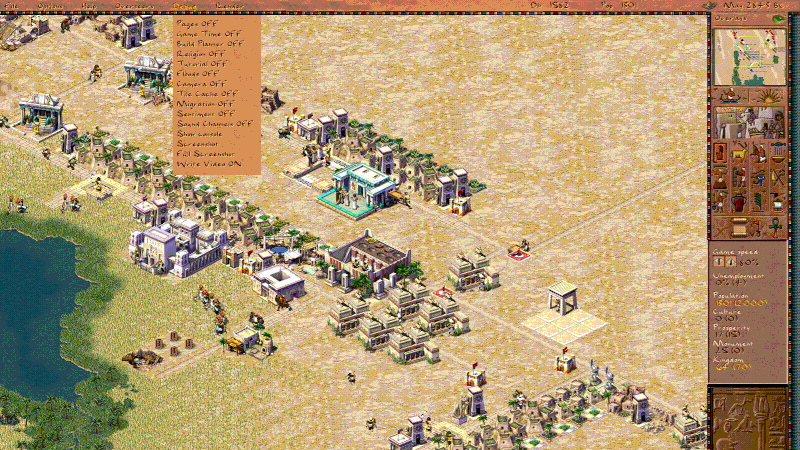
In the late 90s Sierra's historical city-builder series was at the peak of its popularity, getting great reviews and spawning plenty of followers and imitators — from Children of the Nile and on through Banished (2014), Pharaoh: A New Era (2023), Nebuchadnezzar (2021), Builders of Egypt (sadly cancelled) — effectively becoming the granddaddy of the genre. Pharaoh appeared in 1999 after two years of development, following the beloved Caesar III. It was the first game in the series to move the setting from Ancient Rome to Ancient Egypt and offered (though really just repeated — the actual step forward in mechanics was Zeus) a complex gameplay that nonetheless wasn't built on the micromanagement of buildings and citizens. Many people remember these games thanks to hundreds of failed missions, when the emperor angrily sent troops or the kingdom revoked your title over debts. The first "Paradox" game is still a whole year away, and the genres and settings are quite distant, so in 1999 and 2000 Pharaoh reaped the laurels and the cream of the sales, while Simon Bradbury, the studio's chief technical genius and the soul of the project, left the team and founded his own Firefly Studios to give us Stronghold.
In the course of code-archaeology digs into the Caesar and Pharaoh binaries, I found plenty of interesting legacy fossils technical solutions, many of which I've seen in other projects, and not only in games. This dense legacy (though not as dense as AoE1/2) may look crude, but there's definitely beauty in the solutions — and bear in mind these games launched and delivered decent FPS (15-30) running on all sorts of early Pentiums, 586s and Athlons with just 32 MB of RAM, not cache. And they ran fast, looked good, and did it on a single core.
All the screenshots in the article are taken from the open-source version of the game.
Coming back to the topic of the article: all the newfangled stuff (relatively newfangled, of course — the first open ECS framework implementations became popular somewhere after 2014, and the mainstream EnTT from 2017) was used in games earlier too, but it was usually a feature of in-house engines or studio know-how. Same with the ECS implementation in the Caesar and Pharaoh engine: it wasn't carved out as a separate system or framework, but the working principles were already clearly formed and got massively copied between the game's subsystems, which is what let it pull those 15-20 FPS on the weakest machines. These days, on the GPU, we can afford to render a frame from scratch every time, but that was very expensive on the APIs of the era, and various tricks were used like updating only the changed part of the screen or splitting into work zones with checkerboard updates. That's me grumbling a bit, watching UE5.1 take 2 minutes to open an empty scene across 12 threads and eat 6 gigs of RAM.
An ancient-Egyptian ECS
How does all this relate to modern ECS frameworks? Let me explain a bit what the Entity Component System (ECS) idea is — I'm personally a proponent of the classic SceneGraph approach and believe that, done skillfully, it's in no way slower than ECS, especially if you take care of a proper split across threads.
In traditional development, whether it's a game or other software, you use an approach with inheritance of data and logic. For example a porter inherits from a human, who inherits from a movable object, which inherits from another object that knows how to play an animation. A trader inherits from a porter, because the latter already knows how to carry something, and so on.
This is the example for the various objects on the map; for the map itself you need to know the tile type (water, land, trees, dunes, etc.), but this approach has problems. The first is inflexible inheritance for combined types and extending the functionality of such objects: if we decide to create rocks on which buildings can stand, the inheritance tree breaks and you have to come up with workarounds — or buildings that can sit on the shore: the shore is water, you can't build on water. But sometimes you can.
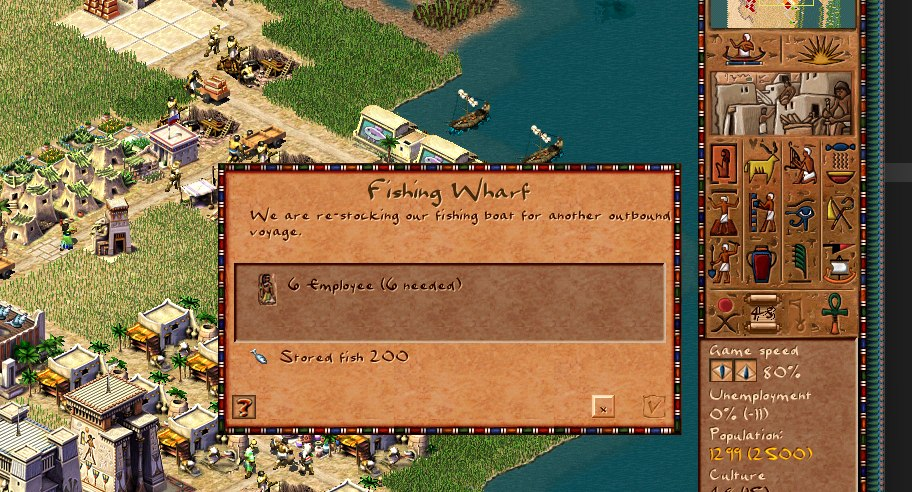
The second is the inefficient use of CPU resources, namely the cache, and on weak devices this is very noticeable. Every frame in the game you'd have to walk all the map tiles to update their state, or the amount of resources in a tile, or other parameters. In the traditional approach we'd have a big tile object with the corresponding fields, states and dependencies. Something like this:
struct Tile {
// Main tile parameters
int i; // Tile coordinates
int j; // Tile coordinates
int resources; // Amount of resources in the tile
int state; // Tile state
bool isOccupied; // Whether the tile is occupied by a unit
....But when you update such an object, the data next to the needed fields also lands in the cache, taking up space and time to fetch and update. This is enormous waste that can't be beaten by classic means.
The point of ECS is to pull those small needed pieces of data out into a separate object that will sit among objects like it and carry no extra cost during processing. Accordingly, to process such objects you'll need some system that knows how to work with them. Continuing the city-map example, you can pull all the trees into one system, the rocks into another, the buildings into a third, the tile animations into a fourth, and so on. This significantly complicates the overall architecture and introduces dependencies between systems that you'll also have to account for during development, but that was a small price for the speed.
Here's what the brilliant fathers of game development — though "grandfathers" fits better here — Saimon Bradbury and Mike Gingevich came up with in 1998. The game entities described above are placed in arrays, with the index being the tile number on the map. The maximum map size is 228×228 and it's always fixed, but visually the map can be smaller, in which case part of the map is stuffed with a notional -1 to know that such data needn't be processed. This is, for example, how the desirability, water and animation processing systems look in the code and in the game.
struct grid_xx {
int initialized;
e_grid_data_type datatype[2];
size_t size_field;
int size_total;
void* items_xx;
};
void map_grid_init(grid_xx* grid) {
grid->size_field = gr_sizes[grid->datatype[GAME_ENV]];
grid->size_total = grid->size_field * GRID_SIZE_TOTAL;
grid->items_xx = malloc(grid->size_total);
grid->initialized = 1;
}The map and the data array for land desirability:
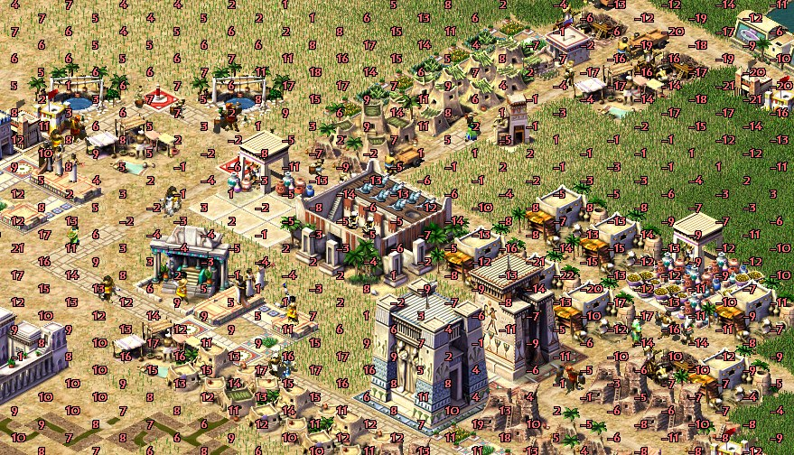
The same array in a more representative form, as it was in the game.
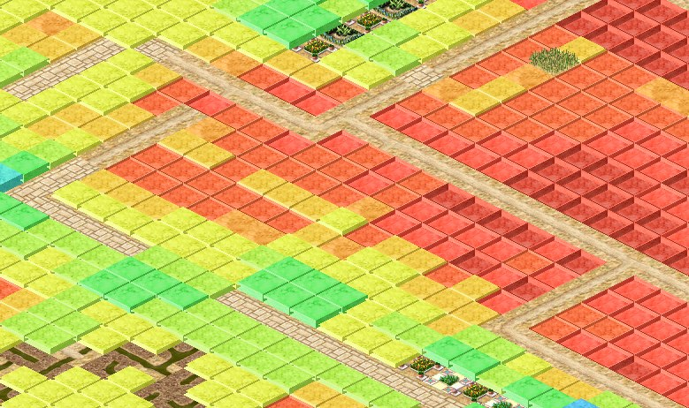
The map and the data array for water availability.
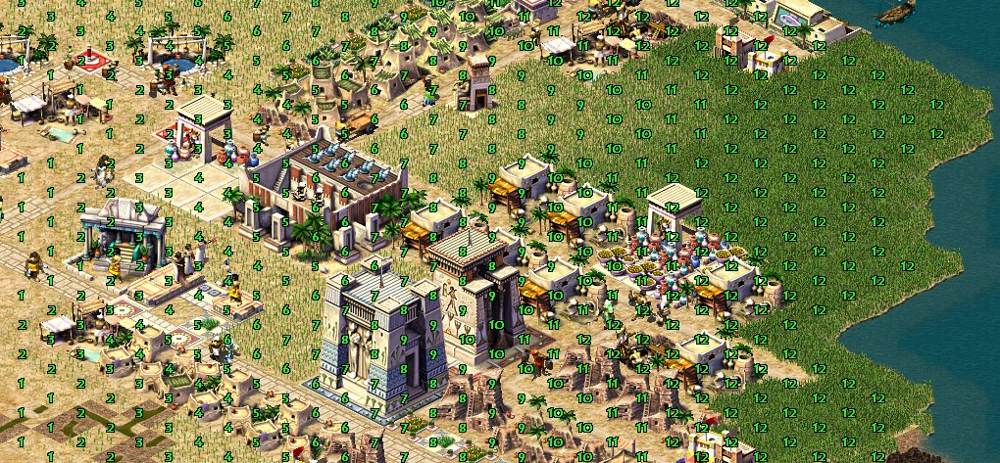
The same one in a more convenient-to-view form.
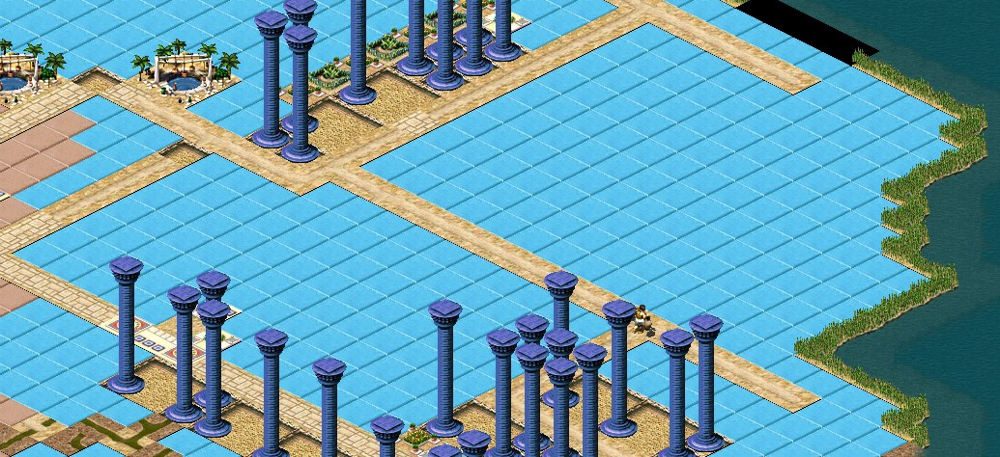
The animation array for each tile. Here we have the inverse situation: when rendering a tile's texture, the information is taken from this array, and by changing these values in the array you can safely and quickly update the data on the map and change how it's displayed.
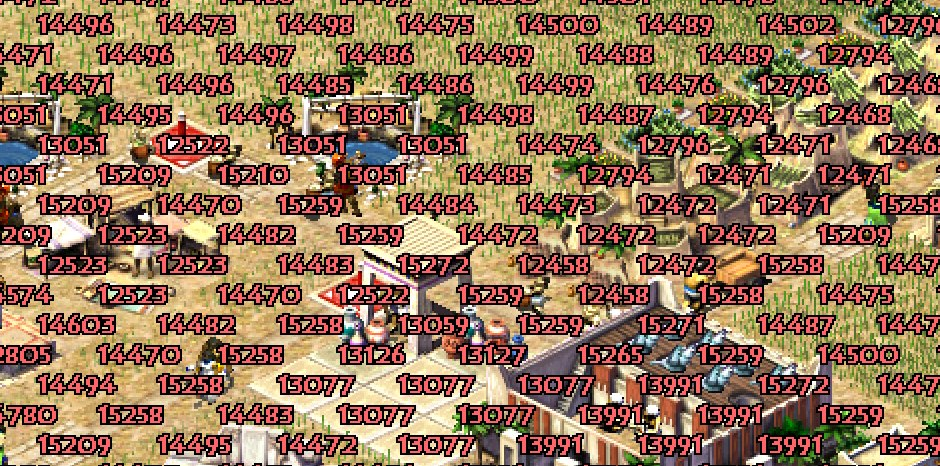
How the map-update algorithm is implemented (an example for tile desirability, needed to raise a house's level):
grid_xx g_desirability_grid = {0, {FS_INT8, FS_INT8}};
void map_grid_add(grid_xx* grid, uint32_t at, uint32_t v) {
if (at >= GRID_SIZE_TOTAL)
return;
((uint8_t*)grid->items_xx)[at] += v;
}
void desirability_t::update_buildings() {
int max_id = building_get_highest_id();
for (int i = 1; i <= max_id; i++) {
building* b = building_get(i);
if (b->state != BUILDING_STATE_VALID) {
continue;
}
const model_building* model = model_get_building(b->type);
map_grid_add(&g_desirability_grid, grid_offset, model->desirabilty);
...
}
}Updating a tile's desirability and accessing the data turn into index access in an array, instead of walking objects and their properties. Another nice property of this solution is fast saving and loading as a binary block that doesn't require walking and updating objects.
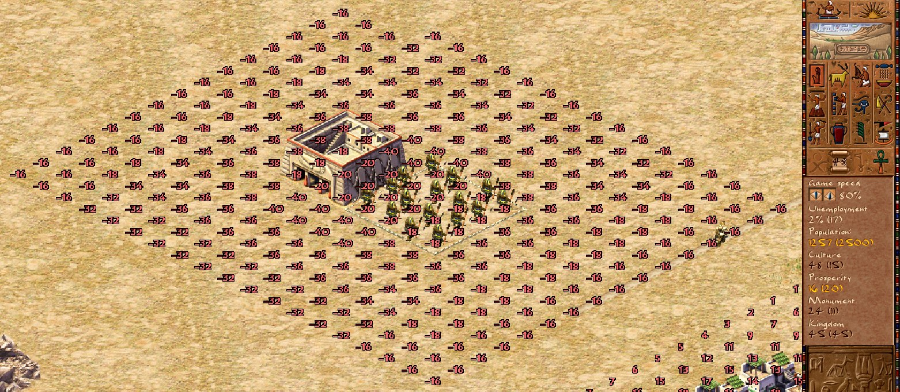
Ancient DynVMT
As a reminder, the engine was written in pure C; its history traces back to 1991 with the release of Caesar I. Judging by the comments in the resources and various constants from the binary that the community pulled out, by the time Pharaoh was released the engine was at version 6.4 (Caesar had 6.1).
There were obviously no goodies like virtual functions (Virtual Method Table), but a similar mechanism was supported by the developers and implemented via callbacks. VMT, or dynamic dispatching, or late binding, in the context of C++ means calling the correct function, which can be defined in several ways for a parent and a child. In the general case, when you define a method inside a class, the compiler remembers its definition (address) and executes it whenever that method is called.
struct A {
void foo() { printf("A::foo"); }
}Here the compiler will create the method A::foo() and remember its address. At this point there is only one implementation of this class method and it is shared across all instances of the class and its descendants. This is called static dispatch or early binding, because the compiler always knows at compile time exactly which method will be called.
struct B {
virtual void bar() { printf("B::bar"); }
virtual void qux() { printf("B::qux"); }
}
struct C : public B {
virtial void bar() override { printf("C::bar"); }
}
B* b = new C();
b->bar();Once virtual functions appear in a class, the compiler can't know which implementation of the method will be correct at runtime. If we kept using static dispatch, the call b->bar() would land on B::bar, since from the compiler's point of view that's what the current type of the object points to, even though it's actually a different one.
Given that virtual methods can be overridden in descendants, the correct implementation can't be computed at compile time (except in a few explicit cases), so this information has to be found at runtime — and that's what's called dynamic dispatch or late binding.
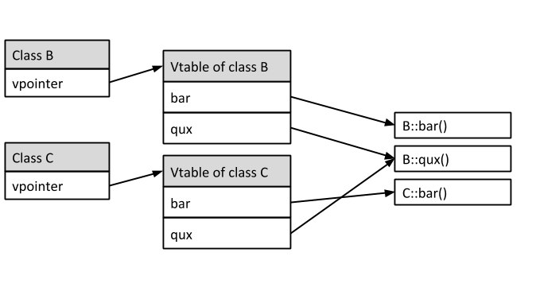
Within the game, this mechanism was needed first and foremost to implement the user interface, which had to support "notional" multi-window behavior. In reality the game always showed only one active window; this was due to compute-resource limits — many machines of the era simply couldn't handle drawing all the windows every frame, which would lead to a framerate of 2-3, which you'll agree is utterly unplayable.
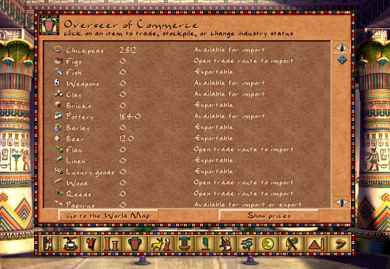
The developers of the original game made a bare-bones VMT — a struct of callbacks that were set when a window was initialized (the constructor).
struct window_type {
e_window_id id;
void (*draw_background)() = nullptr;
void (*draw_foreground)() = nullptr;
void (*handle_input)(const mouse* m, const hotkeys* h) = nullptr;
void (*get_tooltip)(tooltip_context* c) = nullptr;
void (*draw_refresh)() = nullptr;
}This let them get away from bulky switch conditions and spread the implementations across separate files; it also let them make the user interface notionally multi-window and keep a stack of displayed windows with the ability to switch between them.
void window_file_dialog_show(file_type type, file_dialog_type dialog_type) {
static window_type window = { <<< VMT
WINDOW_FILE_DIALOG, <<< header
window_draw_underlying_window, <<< functions
draw_foreground,
handle_input
};
init(type, dialog_type); <<< ctor
window_show(&window); <<< new window
}Another interesting property of this approach is the ability to swap out a "virtual" function's current implementation on the fly without needing a separate class — as was done, for example, for the advisors window, where the same code is responsible for displaying the current advisor, but the concrete implementation is pulled out into separate functions that are swapped on the fly. If you try to do this in C++, you'll need several classes, each using its own implementation of the display function.
Logical threads from the last century
Traditionally, in game development over the last twenty years or so, several threads are used to do several tasks, each doing its own work. The OS handles switching between threads and takes on context saving and other "little things". But until the mid-2000s most games didn't have this option, and threads were used mainly for heavy computation like playing sound, loading and decompressing textures, but not for game logic.
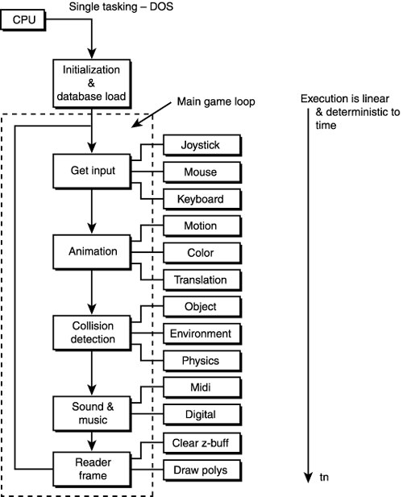
The single-threaded concurrency model with an event loop lets a program perform various tasks that have been put into a queue; in that case the control of a task's context falls on the developers. This is how the classic keyboard and mouse event handling is done in most games, including modern ones.
Meanwhile the need to switch between tasks didn't go anywhere, and it had to be solved either with a task queue or with logical threads, which is what was implemented in Pharaoh. The essence of this solution is that the game loop is broken into steps — for example updating fire probability, tree growth, citizen generation, the influence of wells, and so on.
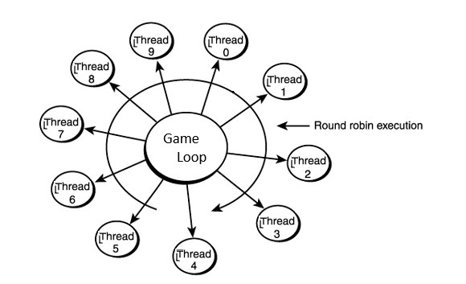
Each step runs sequentially one after another on each frame (there's also a variant with priorities) until all are done. The game loop is thus stretched across the number of such steps, while execution of each step is guaranteed and the total loop time is smeared between them — and instead of a notional 140ms + render time per frame and 7fps, we get a notional 140ms / 10 = 14ms + render time per frame, or the desired 20-30fps. Over ten frames the game goes through a full game loop, but to the player this split isn't noticeable, because object animations happen at the same speed on every frame — that part can't be moved into a logical thread.
Here's how this part was implemented in the game — the code is already slightly changed, but not globally, so the structure should be clear:
void game_t::update_city(int ticks) {
g_city.buildings.update_tick(game.paused);
switch (gametime().tick) {
case 1:
g_city.religion.update();
g_city.coverage_update();
break;
case 2:
g_sound.music_update(false);
break;
case 3:
widget_minimap_invalidate();
break;
case 4:
g_city.kingdome.update();
break;
case 5:
formation_update_all(false);
break;
case 6:
map_natives_check_land();
break;
....GodObject and running out of memory
In general a god class/object is an anti-pattern in programming that consists of creating a class or data structure that does too many tasks. I haven't yet seen a game engine that managed to avoid such an object appearing; everyone tries to minimize its influence on the architecture, with varying success.
Such a class is usually huge, contains many dependencies and manages various objects, performing practically all of the objects' functions. But it had one very significant property for that era — it allowed substantial memory savings and placing objects in one place. On the weak machines of the time, with 32MB of RAM or less, the game launched with cut-down display settings and a limit on the number of citizens in the city; if a normal session allowed 4k figures on the map, a cut-down one only 2k — and that way the developers managed to let more people play.
The memory saving lies in the fact that we can lay out sets of data through a union, packing them without the need to bloat the data structures. That's pretty much where the advantages of this approach end, and from there on it's all problems, because a god object is a god precisely in that it really starts doing everything — and at night it also corrupts a little memory.
Here's how a city citizen is implemented (an example of how not to do it), but code archaeology sometimes has its own rules, and to avoid breaking the game entirely you have to put up with temporary inconveniences (figure.h):
class figure {
public:
e_resource resource_id;
uint16_t resource_amount_full; // full load counter
uint16_t home_building_id;
uint16_t immigrant_home_building_id;
uint16_t destination_building_id;
uint16_t id;
uint16_t sprite_image_id;
uint16_t cart_image_id;
animation_context anim;
....
bool use_cross_country;
bool is_friendly;
uint8_t state;
uint8_t faction_id; // 1 = city, 0 = enemy
uint8_t action_state_before_attack;
uint8_t direction;
...
union {
struct {... } herbalist;
struct {... } taxman;
struct {... } flotsam;
struct {... } fishpoint;
....
} local_data;Eternal pyramids
Things are still bad with the pyramids — I just can't find the time to figure out the mess of asm that the logic of building them turns out to be. But with something simpler there's already progress: the engine can already build mastabas.
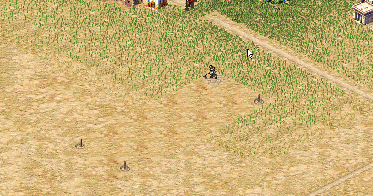
Thanks for reading to the end! I hope it was interesting. If the project caught your interest, come to the proper telegram channel github repo — let's build pyramids together.